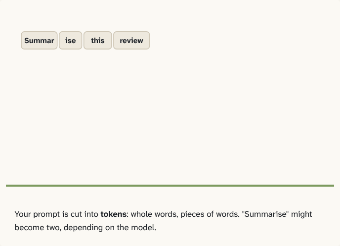

Free courses · 6 puzzles so far · about 30 minutes
LLMs for mobile engineers, from tokens to your app
What actually happens when your app calls a language model: tokens, one at a time; why answers stream; why the model remembers nothing; why the same question gets different answers; where the API key must never live; and when the model should run on the phone instead. One small puzzle at a time.
Start the first puzzle → Your learning →

How it works
Each puzzle starts with something you'll hit when you put a model in an app, gives you one building block, shows it in a diagram that plays itself, and ends with three questions you have to answer to unlock the next one. Facts come from Anthropic's and Android's documentation and Google Cloud's security guidance, linked on every page. How these courses are made, and how they're checked →
Modules
Every puzzle opens: start wherever you like. Each one builds on the ones before it; its check tells you you're ready for the next. ✓ marks the ones you've passed (saved only in this browser).
Module 1: A model in your app
Tokens, streaming, statelessness and the context window, temperature, keys, and on-device models. Know this already? Take the check →
- Start here: One token at a time You send a prompt and get a paragraph back. It looks like the model writes the answer the way you would. It doesn't. Here's the loop that produces every word, and the unit everything is measured and billed in.
- Why answers stream Your chat screen shows a spinner for eight seconds, then the whole answer at once. Users think it's broken. The model had the first words after half a second. Here's how to show them, and what changes in your networking code. Builds on 0.
- It remembers nothing Your chatbot answers the first question well, then forgets it on the second. Or it remembers everything, and each message gets slower and more expensive. Both come from one fact about the API. Here's what your app must send, every time. Builds on 0.
- Same question, different answers Your unit test checks the model's summary against an expected string. It passes, then fails, then passes, with no code change. Here's where the randomness comes from, the knob that turns it down, and why it never reaches zero. Builds on 0.
- Your key is not a secret The quickest way to ship an AI feature is to put the provider's key in the app and call the model directly. A week later the bill is ten times your users' usage. Here's why a key inside an APK isn't hidden, and the small backend that fixes it. Builds on 1.
- On the phone or in the cloud Puzzle 4 put a server between your app and the model. For some features you can skip the server and the network entirely: Android ships a model that runs on the phone. Here's what it's good at, what it costs you, and how to choose.
Next: what a call costs and how it fails (next)
max_tokens and a cut-off answer, why output tokens cost more than input, rate limits and retries, prompt caching, and structured output you can parse.
Module 2: Tools and agents (later)
Tool use: the model asks your code to act; structured output; the agent loop; letting it read your app's data safely; prompt injection.
Module 3: Shipping it (later)
Prompt caching and cost, evaluating answers, guardrails, latency budgets on mobile, and fallbacks when the model is down.
Take it with you
Continue with Claude
Copies a prompt that turns Claude into your tutor for this course: what you've passed, the words you know, the questions you slipped on, and how to teach you, one small block at a time. Paste it into Claude, or any AI assistant. Built in your browser from your progress; nothing is sent anywhere.
Download for Obsidian
The whole course as an Obsidian vault: a note per puzzle linked to the puzzles it builds on (open the graph view to see the building blocks), a glossary, and every question as a flashcard for the Spaced Repetition plugin.